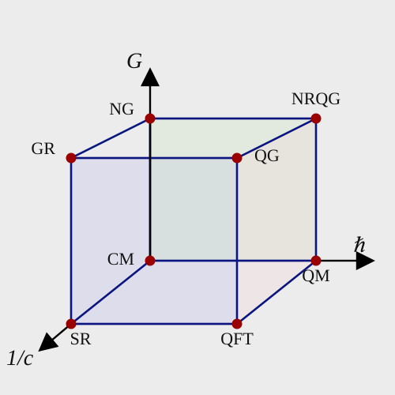
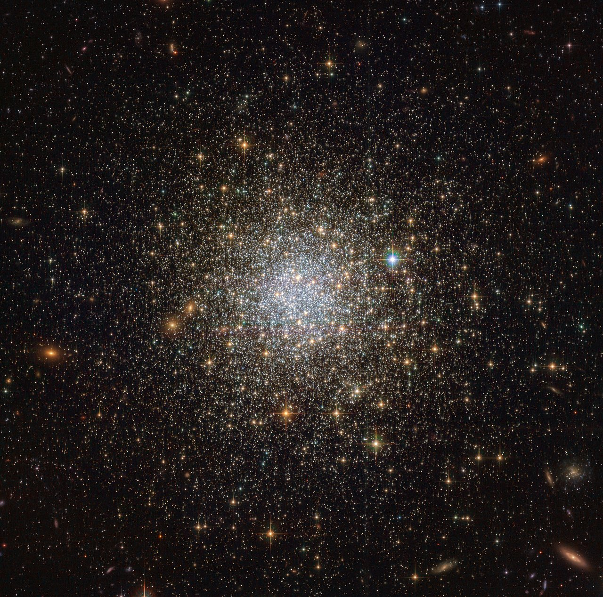

My research intertwines philosophy of physics, general philosophy of science, and metaphysics of science. I am currently mainly focused on three research areas.

My main academic interest is how scientific theories that describe reality at different levels are related, and in particular the conditions under which one physical theory can be reduced to another. I addressed reduction across a range of contexts, including thermodynamics, quantum mechanics, astrophysics, and biochemistry. A central focus of this work has been functional reduction and the development of this approach within the philosophy of science [SEP]. More broadly, I am interested in how the ontologies of theories valid at different regimes or scales are connected, and in effective realism as a brand of scientific realism.I work on the structure and ontology of spacetime theories, in both classical and relativistic physics. My research focuses especially on the nature of time, including tense realism and the relationship between space, time, and spacetime in Newtonian and relativistic physics, with particular attention to what physics tells us about simultaneity and the unification of space and time into spacetime.

I'm interested in the foundations of thermodynamics and statistical mechanics, both at the classical and quantum levels. I'm especially interested in the relationship between these theories and in their applicability to unconventional domains, such as self-gravitating systems like globular clusters. Although they are successful in describing such systems, standard applications of concepts such as equilibrium and heat capacity are problematic, prompting a reconsideration of the foundations of statistical physics.